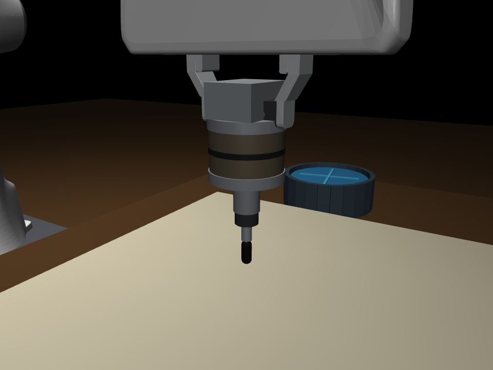
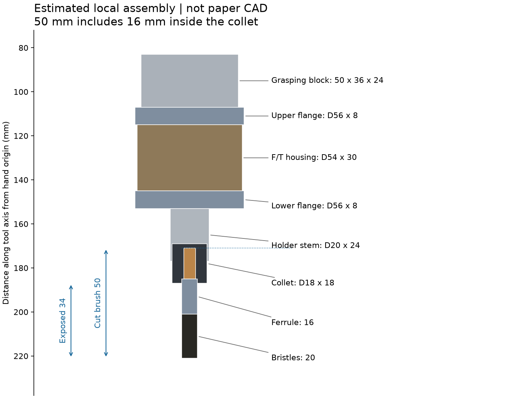
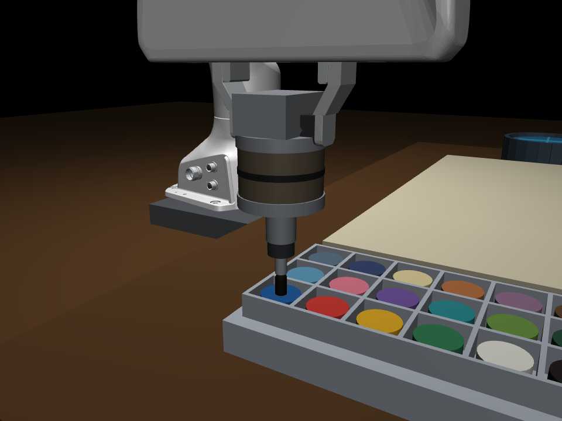
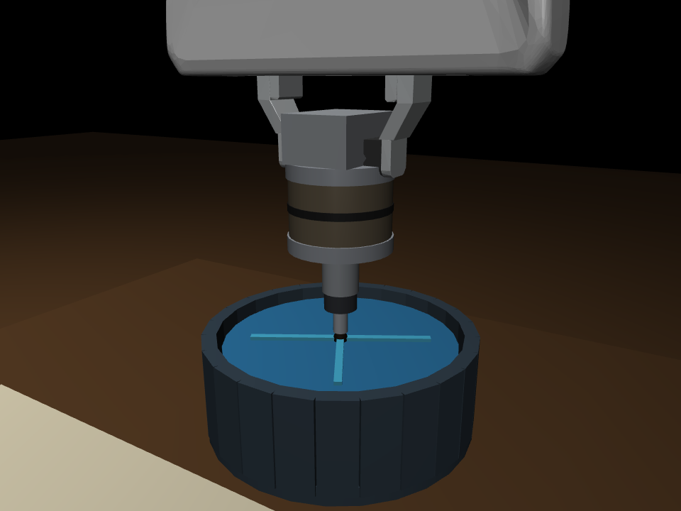
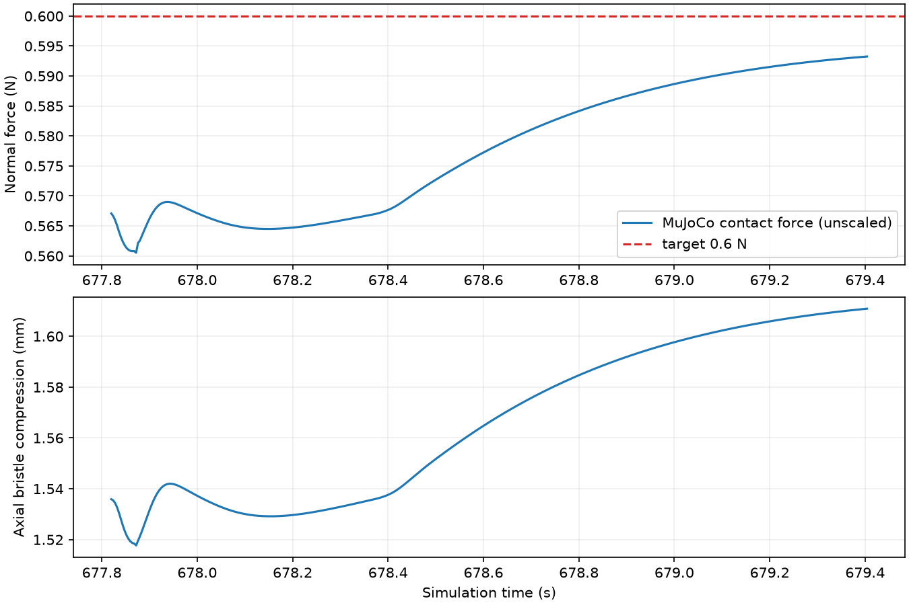

IMPASTO / LOCAL SIMULATION短笔装配与工位布局修正
原长杆缺少论文中的安装件，已改为夹持块、上下法兰、F/T 外壳、夹具与短画笔。
论文的“trimmed to 5 cm”按修剪后整笔 50 mm 解释；其中 16 mm 插入夹具，34 mm 外露。
木柄 14 mm、金属箍 16 mm、刷毛 20 mm，传感器外壳约 Φ54×30 mm：这些拆分尺寸均为本地估计。
调色盘与水盆分别放在画布两侧，目标位置从场景几何读取，采用竖直进入与平滑换位。

实际 MuJoCo 工具近景
本地估计尺寸（非作者 CAD）实际验收结果
| 蘸漆 / 清洗实际验证 | 24 / 24 次，各全部成功 |
| 工位最大静态 IK 误差 | 0.049 mm |
| 浸入时最大 XY 误差 | 0.031 mm |
| 整个路径最大刷杆倾角 | 0.957° |
| 浸入时最大刷杆倾角 | 0.0033° |
| 超过 0.5 mm 的意外穿透 | 0 |
| 单笔 + 多笔绘画 | 9/9 成功，各笔全程接触 |
| 9 笔平均力 RMSE | 0.022 N |
| 9 笔平均力标准差 | 0.011 N |
| 9 笔平均轨迹 RMSE | 2.66 mm |
| 无录像的仿真 / 墙钟时间比 | 9.58× |
| 4 进程吞吐 / 串行加速 | 1.32 笔/s / 3.65× |

笔尖竖直浸入颜料
笔尖竖直浸入水面，旋转器运动8 笔场景录像
同步顶视视频 · 单笔视频
接触力和刷毛压缩

论文对齐与边界
这些误差来自理想仿真，不代表真实机器人精度。保留 Panda、画布尺寸、24 色槽、顶视观测与附录 A 的工具结构；安装尺寸、质量、工位坐标为本地设计。刷毛使用轴向弹簧近似，颜料为接触驱动沉积模型，水盆无流体仿真。
当前控制仍是关节伺服加连续法向高度反馈，没有完整实现论文式 (4) 的 JᵀF 前馈力矩注入与运笔保持高度策略。原有接触力乘 0.08 的缩放已移除，报告力值是 MuJoCo 未缩放接触力；安装点六维传感器单独保留。
演示是预设笔画，不是学习模型或 MPC 的结果。未验证论文整个 0.1–4 N 工况。物理步长 2 ms，控制周期 4 ms，视频按仿真时间采样，不加速播放。
逐项论文核对 · 工位数值 · 力曲线 CSV · 阶段 1 数值